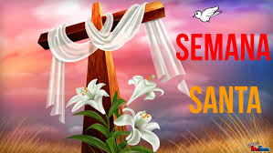
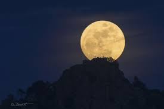
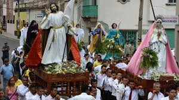

SEMANA SANTA

La Semana Santa o Semana Mayor está cargada del sentido cristiano y según estos debe ser tiempo para reflexionar en Jesucristo, hijo de Dios que ofrendó su vida para que vivamos en paz.
El significado de esta semana es puramente cristiano, sin embargo, este período de asueto es empleado por muchas personas para realizar actividades de esparcimiento y diversión.
Este “tiempo santo” muy bien podría ser utilizado para reflexionar en qué cosas podemos hacer para realizar cambios positivos en nuestras vidas, trabajo, en el país y por qué no hasta en el mundo.
Para los cristianos, la Semana Santa es el tiempo litúrgico más importante, y es dedicado a la oración y reflexión de los misterios de la pasión, muerte y resurrección de Jesucristo, hijo de Dios.
La Semana Mayor se inicia este primero de abril con el Domingo de Ramos, día en que se recuerda la entrada triunfal de Jesús a Jerusalén y finaliza el domingo 8 del mismo mes, con el Domingo de Resurrección.
Por su lado, el Jueves Santo abre el Triduo Pascual, que no es más que los tres días en que los católicos celebran la pasión, muerte y resurrección de Jesucristo. Comprende el tiempo desde la tarde del Jueves Santo, hasta la tarde del Domingo de Pascua. Es el corazón del año litúrgico.
El Viernes Santo es el episodio más triste de la Semana Santa conmemorándose la muerte en la cruz de nuestro señor Jesucristo.
El Sábado Santo se medita sobre el misterio de la pasión de Cristo, el Domingo de Resurrección, es el momento de mayor júbilo donde se celebra la resurrección de Jesús.
Es bueno aclarar que todos los actos que se realizan desde el inicio de la Semana Santa, tienen un significado cristiano, y con ello se busca recordar el sacrificio de Jesús en la cruz. El verdadero significado de la gran Fiesta Pascual, como también se le llama a este período, es tener un encuentro con Dios y acercarnos más al prójimo realizando buenas acciones. Los cristianos interpretan la Semana Santa, no como el recuerdo de un hecho histórico, o un momento de vacaciones sin sentido, para ellos es tiempo de perdón y de reconciliación fraterna, expulsando de sus corazones el rencor, odio y la envidia.
La época se inicia con la cuaresma, conocida como el tiempo de preparación, donde se recuerda los cuarenta días de Jesús en el desierto. Comienza con el miércoles de ceniza y culmina con el Domingo de Ramos.
El Domingo de Resurrección, es el día en que Jesucristo resucita después de la crucifixión, va al encuentro con sus apóstoles y luego sube hacia los cielos, también es la finalización de la Semana Santa. El Domingo de Resurrección o de Pascua es importante para los católicos, ya que con la Resurrección es cuando adquiere sentido toda su religión.
Este día de resurrección es alegre pero triste para los Cofrades, alegre por la manifestación de la resurrección que sustenta la religión y triste porque la Semana Santa finaliza.
Se realizan diversas procesiones religiosas, en muchas ciudades como coloflón de las fiestas desfilan representaciones de todas las cofradías, las procesiones de este día están llenas de color y alegria. Se mezclaran en los pasos capirotes de todos los colores que han desfilado a lo largo de la semana.
Se establece la fecha de celebración de Semana Santa varía entre el 22 de marzo y el 25 de abril de cada año. No hay una fecha fija porque se realiza el domingo siguiente a la primera luna llena de la primavera del hemisferio norte. Esta fiesta determina, a su vez, cuándo se celebran otras fiestas católicas.
Probablemente usted habrá notado que la fecha de la Semana Santa varía considerablemente de un año al siguiente. Esta fecha se escoge a partir de una fórmula establecida por el Emperador Romano Constantino el Grande y el Concilio de Nicea en 325 d. C. Usted puede usar la fórmula para verificar la fecha de Pascua cada año.
En primer lugar debe hallar el equinocio vernal, o primer día de primavera ( alrededor del 21- 22 de marzo ), en un calendario que incluya datos astronómicos básicos. Después busque la siguiente luna llena, normalmente está indicada en una esquina del calendario. La Semana Santa caerá el domingo siguiente.
De acuerdo con esta regla, la fecha más tardía posible para Semana Santa sería el 25 de Abril, la próxima ocurrencia será en 2038. La más temprana el 22 de Marzo, en 2285. La mayoría de las veces, la Semana Santa cae durante la primera semana de Abril.
.jpg)
Domingo de Ramos
El Domingo de Ramos se celebra con hojas de palma, las cuales son bendecidas y posteriormente quemadas para usar sus cenizas el Miércoles de Ceniza del siguiente año. Aunque también se acostumbra colgarlas detrás de la puerta de entrada del hogar como defensa para permitir únicamente el paso de la energía positiva. Evoca la entrada del triunfo de Jesús a Jerusalén, donde fue recibido de forma positiva, motivo por el que surge la tradición de utilizar ramos para celebrar. Finalmente, el Domingo de Pascua, se celebra el máximo evento para los cristianos: la Resurrección.
Viernes Santo
La representación de Las tres caídas de Jesús se puede admirar en casi cualquier comunidad, pues en todos, se realiza la dramatización del Vía Crucis, aunque te aconsejamos viajar hasta el pequeño cerrito que se encuentra en la misma comunidad de San Pablo Ahuatempan . Poco a poco ascienden hasta que alrededor de las de la tarde llega a la cima y empieza la crucifixión de Jesús y los dos ladrones.
Tras las famosas siete palabras y su posterior muerte, Jesús, Dimas y Gestas son bajados de sus cruces. Concluida ésta emotiva y singular representación de la pasión y muerte de Jesucristo, despues de la representaciòn y muerte de jesucristo se hace la Procesión del silencio, la cual se desarrolla desde hace más de tres décadas ininterrumpidamente.
Comienza aproximadamente a las 6:30 de la tarde, en el misma comunidad pasando por la mayoria de las calles
Domingo de resurrección ò de pascua
Se celebra con una Misa solemne en la cual se enciende el cirio pascual, que simboliza a Cristo resucitado, luz de todas las gentes. Se podría decir que el Domingo de Resurrección marca el final de esta celebración de la Semana Santa, con la coronación del nuevo Centurión quien se encargará de continuar con la tradición el año siguiente.
En Iztapalapa tiene lugar una ceremonia, fiesta y representación de la Pasión, que no responde ni a una narración sacra, ni a un teatro tradicional: es una expresión de múltiples aportaciones que se funde en una particular sincretización.
Iztapalapa, una de las 16 delegaciones que constituyen el Distrito Federal, ha sustituido sus canales, chinampas y trajineras con verduras y flores, por ejes viales y el Metro. Tiene en el Cerro de la Estrella, en sus templos, plazas y jardines de Ia cabecera, los espacios sagrados donde se escenifica cada año la representación ritual por excelencia.
La coexistencia de Iztapalapa con la gran urbe, no ha logrado borrar Ias viejas costumbres; sus habitantes renuevan sus lazos de amistad, de compadrazgo y vecindad, de pertenencia e identidad con el barrio y con Ia localidad en las distintas fiestas de su calendario, pero es en la Semana Santa cuando éstos aparecen con mayor fuerza.
Cómo es la celebración En el acto, de marcada solemnidad, participan cientos de personas, entre ellas el cuerpo diplomático acreditado ante la Santa Sede. Se leerá la Pasión según San Juan y, acto seguido, el predicador de la Casa Pontificia, el franciscano capuchino Raniero Cantalamessa, pronunciará la homilía.
La Liturgia del Viernes Santo es la única del año en la que no hay consagración, pero sí comunión, y estará presidida por una cruz cubierta con una tela roja situada en el altar mayor del templo. La ceremonia de la Pasión es seguida por el tradicional Via Crucis en el Coliseo de Roma, un acto que comenzará a las 21.15 locales.
Semana Santa y Pascua en Jerusalén
El periodo de la Cuaresma está llegando a su fin y tanto los cristianos locales como los miles de peregrinos que han acudido a la Ciudad Santa se están preparando para celebrar Semana Santa y su culminación en el Domingo de Resurrección, la fecha de mayor importancia del año litúrgico cristiano.
No hay nada como vivir la Semana Santa en Jerusalén. Celebrar los grandes eventos de la historia de salvación y de la vida de Jesús en los mismos lugares en los que ocurrieron es una experiencia de fe conmovedora e inolvidable para todos los creyentes.
Oficialmente, Semana Santa comienza al conmemorarse la entrada de Jesús en Jerusalén el Domingo de Ramos (1 de abril), con la misa matinal de las 8 en la Iglesia del Santo Sepulcro y la tradicional procesión de Palmas durante la tarde. Más tarde, a las 14.30, miles de cristianos de todo el mundo marcharán jubilosamente desde Betfagé, rezando y cantando en todos los idiomas, descendiendo por la ladera occidental del Monte de los Olivos en camino a la Ciudad Vieja, a través del valle de Kidrón.
En países como Estados Unidos, la celebración de la Pascua prescinde de grandes despliegues religiosos, aunque hay quien lo celebra yendo a misa.
El Domingo de Pascua es una de las fechas tradicionales en EE.UU. para los reencuentros familiares, y una ocasión para que las niñas y jóvenes luzcan vestidos casi nupciales.
Lo habitual en Estados Unidos es que la Pascua se convierta en una semana de vacaciones, aunque ahora el spring break (vacaciones de primavera) escolar no necesariamente coincide con la Semana Santa o Pascua. En las escuelas públicas, dependiendo del estado e incluso del condado, esa semana de vacaciones ocurrirá antes, durante o incluso después de Easter.
El Domingo de Pascua se intercambian obsequios de todo tipo y están presentes en todas partes los huevos y conejitos elaborados en chocolate.
.jpg)